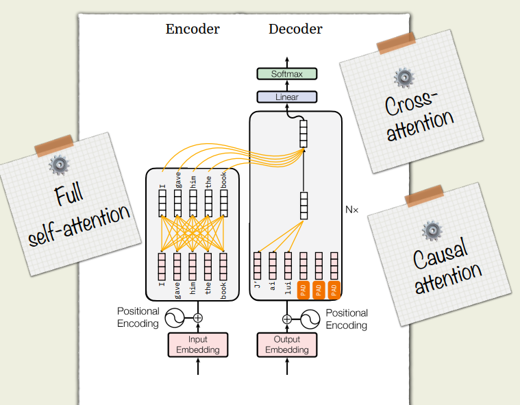

Encoder, Decoder, Encoder-Decoder¶

TLDR:¶
- Encoder: Self-attention — bidirectional, no masking
- Decoder: next token prediction, given past words
- Encoder-Decoder: seq2seq — originally for language translation
- idea is that you need self-attention to give original embeddings more context
- thus values in embeddings will change
- then you will need to generate sentence in the targeted language, which thus needs the element of decoder only of predicting the next word
- however, when generating, you will need to know which ones
- We dont use encoder-decoder for next token prediction because thats cheating (i.e. it already saw the whole sequence of future tokens, and will likely predict what it already saw)
- idea is that you need self-attention to give original embeddings more context
1. Encoder-only models¶
Examples: BERT, RoBERTa, DeBERTa

Architecture¶
- Stack of encoder blocks only
- Self-attention is bidirectional:
- Mask
Mis usually zero everywhere (except padding) - Each token can attend to all tokens in the sequence
- Mask
Formally, for token i, attention can use all tokens j ∈ \{1…T\}.
Training objective¶
Typically Masked Language Modeling (MLM):
-
Corrupt the input by masking some positions, e.g.
"The cat sat on the \[MASK\]." -
Predict the original token at masked positions using full context
- Loss: cross-entropy only on masked positions
This encourages deep contextual representations of the whole sequence.
Typical use¶
Encoder-only models output contextual embeddings H ∈ R\^\{T × d\} and are used for:
- Sentence / document classification (pool over tokens)
- Token classification (NER, POS tagging, etc.)
- Embeddings for retrieval / semantic similarity
- Re-ranking and other understanding-heavy tasks
They are not naturally generative (no causal constraint, no decoding loop), though people sometimes adapt them for limited generation.
2. Decoder-only models (most modern LLMs)¶
Examples: GPT-2/3/4, LLaMA, Mistral, etc.
Architecture¶
- Stack of decoder blocks only
- Self-attention is causal:
- Mask
Mis upper-triangular - Token at position
ican only see tokens1…i(no future tokens)
- Mask
At training time you still process full sequences, but future tokens are hidden by the mask.
Training objective¶
Standard autoregressive language modeling:
Given a sequence of tokens (x₁, …, x_T), maximize:
Implemented as next-token prediction with cross-entropy over all positions (except possibly the first).
Why this fits LLMs¶
At inference, you apply the model in a loop:
- Condition on a prompt (input text)
- Sample / argmax the next token
- Append it to the sequence
- Feed the extended sequence back into the model
- Repeat
There is no architectural distinction between “input” and “output”:
- Everything is a single token stream:
prompt → continuation
This makes decoder-only models very flexible:
-
Translation:
"Translate to French: \<English sentence\>" → model completes with French -
Q&A:
"Question: ... Answer:" → model completes the answer -
Code generation, reasoning, chat, etc.
Key idea: Treat all tasks as conditional text generation.
3. Encoder–Decoder (seq2seq) models¶
Examples: Original Transformer (Vaswani et al.), T5, BART, mT5
Here we explicitly separate source and target sequences.
Architecture¶
Two stacks:
1. Encoder¶
- Input: source tokens
X(src) - Self-attention is bidirectional
- Output: hidden states
H(enc) ∈ R\^\{T_src × d\}
2. Decoder¶
- Input: target prefix tokens
Y₁…Y_\{t−1\} - Uses two attention mechanisms:
- Masked self-attention (causal) over target tokens
- Cross-attention over encoder outputs
H(enc)
Cross-attention (conceptually):
Each decoder token can attend to all encoder tokens (no causal mask on the encoder side).
Training objective¶
Still autoregressive on the target sequence: - The source sequence is fully consumed by the encoder - The decoder conditions on encoder outputs via cross-attention
Typical use¶
Best when you have a clear input → output mapping:
- Machine translation
- Summarization (long article → short summary)
- Text rewriting / paraphrasing
- General “text-to-text” tasks (T5’s philosophy: everything is text → text)
The inductive bias here:
First fully understand the input (encoder), then generate the output while looking back at that understanding (decoder).
4. Side-by-side comparison¶
Attention patterns¶
Encoder-only¶
- Self-attention: bidirectional
- No cross-attention
- Mask: mainly for padding
Decoder-only¶
- Self-attention: causal (uni-directional)
- No cross-attention
- Mask: upper-triangular (no future tokens)
Encoder–Decoder¶
- Encoder:
- Self-attention: bidirectional
- Decoder:
- Self-attention: causal
- Cross-attention to encoder outputs
- Works on two sequences (source vs target)
Functional roles¶
Encoder-only → “Representation learner”
- Input text → contextual embeddings
- Use for classification, ranking, retrieval, etc.
Decoder-only → “Universal generator”
- Prompt in → model continues the sequence
- Use for general LLM behavior (chat, code, reasoning, etc.)
Encoder–Decoder → “Sequence transducer”
- Source sequence in → different target sequence out
- Use for translation, summarization, and structured text-to-text tasks
5. Why LLMs mostly use decoder-only¶
Some practical reasons:
- Unified interface
- Any task becomes: “prompt → completion”
- No need to wire up separate input/output stacks
- Scaling simplicity
- One big stack of identical blocks is easier to:
- Scale to billions of parameters
- Optimize and deploy efficiently
- One big stack of identical blocks is easier to:
- Generalization via prompting
- With scale + instruction tuning, the same model can:
- Answer questions
- Write code
- Translate
- Summarize
- Do reasoning
- …without changing the architecture
- With scale + instruction tuning, the same model can:
Encoder-only and encoder–decoder models are still very useful for specialized tasks (retrieval, ranking, classic MT, etc.). But when people say “LLM” today, they almost always mean a large decoder-only Transformer trained autoregressively.